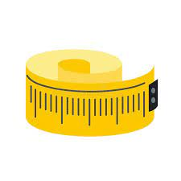

Es la unidad principal de unidades de longitud del Sistema Internacional de Unidades. Un metro es la distancia que recorre la luz en el vacío durante un intervalo de 1/299.792.458 de segundo.
En 1983 se introdujo la definición del metro que utilizamos actualmente y que lo define como la distancia que recorre la luz en el vacío en un espacio de tiempo igual a 1/299792458 segundos. Esto especifica la longitud del metro con una incertidumbre inferior a 0.1 nanómetros.
